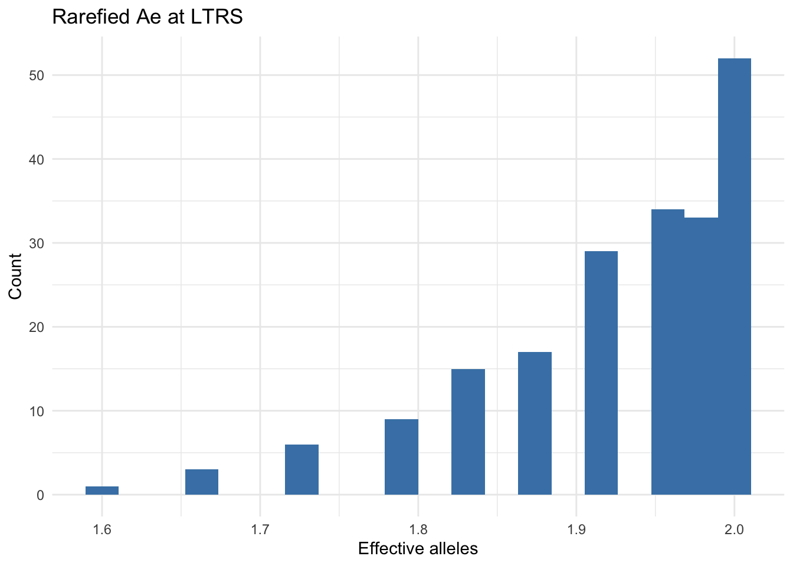

library(gstudio)
library(dplyr)
library(ggplot2)
data(arapat)4 Allele Frequencies & HWE
This chapter covers estimating allele and genotype frequencies, testing for Hardy-Weinberg Equilibrium, and rarefaction analysis.
4.1 Allele Frequencies
The frequencies() function is an S3 generic that works on both individual locus vectors and entire data.frames.
4.1.1 Single Locus
arapat |>
pull(LTRS) |>
frequencies() Allele Frequency
1 01 0.523416
2 02 0.4765844.1.2 Entire Data Frame
When applied to a data.frame, frequencies() returns frequencies for all locus columns:
freqs <- arapat |>
frequencies()
freqs |>
head(12) Locus Allele Frequency
17 AML 01 0.001470588
18 AML 02 0.001470588
19 AML 03 0.019117647
20 AML 04 0.126470588
21 AML 05 0.070588235
22 AML 06 0.072058824
23 AML 07 0.235294118
24 AML 08 0.255882353
25 AML 09 0.145588235
26 AML 10 0.014705882
27 AML 11 0.039705882
28 AML 12 0.0161764714.1.3 By Stratum
Add a stratum argument to partition frequencies by population:
freqs_pop <- arapat |>
frequencies(stratum = "Species")
freqs_pop |>
head(12) Stratum Locus Allele Frequency
1 Cape AML 01 0.0000000
2 Cape AML 02 0.0000000
3 Cape AML 03 0.0915493
4 Cape AML 04 0.6056338
5 Cape AML 05 0.3028169
6 Cape AML 06 0.0000000
7 Cape AML 07 0.0000000
8 Cape AML 08 0.0000000
9 Cape AML 09 0.0000000
10 Cape AML 10 0.0000000
11 Cape AML 11 0.0000000
12 Cape AML 12 0.0000000Because the result is a tidy data frame, dplyr summaries follow directly, for example the most common allele at each locus in each species:
freqs_pop |>
group_by(Stratum, Locus) |>
slice_max(Frequency, n = 1, with_ties = FALSE) |>
filter(Locus %in% c("LTRS", "WNT"))# A tibble: 6 × 4
# Groups: Stratum, Locus [6]
Stratum Locus Allele Frequency
<chr> <chr> <chr> <dbl>
1 Cape LTRS 02 0.92
2 Cape WNT 02 0.865
3 Mainland LTRS 02 0.736
4 Mainland WNT 01 0.983
5 Peninsula LTRS 01 0.692
6 Peninsula WNT 03 0.6094.1.4 Selecting Specific Loci
arapat |>
frequencies(loci = c("LTRS", "WNT")) Locus Allele Frequency
1 LTRS 01 0.523415978
2 LTRS 02 0.476584022
3 WNT 01 0.357954545
4 WNT 02 0.181818182
5 WNT 03 0.430397727
6 WNT 04 0.026988636
7 WNT 05 0.0028409094.2 Frequency Matrix
The frequency_matrix() function produces a wide-format matrix of allele frequencies:
fm <- arapat |>
frequency_matrix(stratum = "Species")
fm[, 1:8] Stratum AML-01 AML-02 AML-03 AML-04 AML-05 AML-06
1 Cape 0.000000000 0.000000000 0.0915493 0.6056338 0.30281690 0.00000000
2 Mainland 0.000000000 0.000000000 0.0000000 0.0000000 0.00000000 0.00000000
3 Peninsula 0.002016129 0.002016129 0.0000000 0.0000000 0.01008065 0.09879032
AML-07
1 0.0000000
2 0.0000000
3 0.32258064.3 Genotype Counts and Frequencies
4.3.1 Genotype Counts per Stratum
The genotype_counts() function summarizes non-missing genotype counts per locus, optionally by stratum:
arapat |>
genotype_counts() Stratum N LTRS WNT EN EF ZMP AML ATPS MP20
ALL ALL 363 363 352 360 361 330 340 363 358arapat |>
genotype_counts(stratum = "Species") Stratum N LTRS WNT EN EF ZMP AML ATPS MP20
Cape Cape 75 75 74 75 75 70 71 75 75
Mainland Mainland 36 36 30 35 34 20 21 36 33
Peninsula Peninsula 252 252 248 250 252 240 248 252 2504.3.2 Genotype Frequencies
The genotype_frequencies() function returns observed and expected genotype counts for a locus vector:
arapat |>
pull(LTRS) |>
genotype_frequencies() Genotype Observed Expected
1 01:01 147 99.44904
2 01:02 86 181.10193
3 02:02 130 82.449044.4 Hardy-Weinberg Equilibrium
The hwe() function tests for HWE using a chi-square approximation:
arapat |>
filter(Species == "Mainland") |>
hwe()Warning in genotype_frequencies(x[[locus]]): Some genotype expectations are <
5, a continuity correction should be applied. See ?hweWarning in hwe(filter(arapat, Species == "Mainland")): Under 50 samples for
LTRS this may not be a good approximation.Warning in hwe(filter(arapat, Species == "Mainland")): Fewer than 5 genotypes
expected at LTRS consider collapsing alleles.Warning in genotype_frequencies(x[[locus]]): Some genotype expectations are <
5, a continuity correction should be applied. See ?hweWarning in hwe(filter(arapat, Species == "Mainland")): Under 50 samples for WNT
this may not be a good approximation.Warning in hwe(filter(arapat, Species == "Mainland")): Fewer than 5 genotypes
expected at WNT consider collapsing alleles.Warning in genotype_frequencies(x[[locus]]): Some genotype expectations are <
5, a continuity correction should be applied. See ?hweWarning in hwe(filter(arapat, Species == "Mainland")): Under 50 samples for EN
this may not be a good approximation.Warning in hwe(filter(arapat, Species == "Mainland")): Fewer than 5 genotypes
expected at EN consider collapsing alleles.Warning in genotype_frequencies(x[[locus]]): Some genotype expectations are <
5, a continuity correction should be applied. See ?hweWarning in hwe(filter(arapat, Species == "Mainland")): Under 50 samples for EF
this may not be a good approximation.Warning in hwe(filter(arapat, Species == "Mainland")): Fewer than 5 genotypes
expected at EF consider collapsing alleles.Warning in genotype_frequencies(x[[locus]]): Some genotype expectations are <
5, a continuity correction should be applied. See ?hweWarning in hwe(filter(arapat, Species == "Mainland")): Under 50 samples for ZMP
this may not be a good approximation.Warning in hwe(filter(arapat, Species == "Mainland")): Fewer than 5 genotypes
expected at ZMP consider collapsing alleles.Warning in genotype_frequencies(x[[locus]]): Some genotype expectations are <
5, a continuity correction should be applied. See ?hweWarning in hwe(filter(arapat, Species == "Mainland")): Under 50 samples for AML
this may not be a good approximation.Warning in hwe(filter(arapat, Species == "Mainland")): Fewer than 5 genotypes
expected at AML consider collapsing alleles.Warning in genotype_frequencies(x[[locus]]): Some genotype expectations are <
5, a continuity correction should be applied. See ?hweWarning in hwe(filter(arapat, Species == "Mainland")): Under 50 samples for
ATPS this may not be a good approximation.Warning in hwe(filter(arapat, Species == "Mainland")): Fewer than 5 genotypes
expected at ATPS consider collapsing alleles.Warning in genotype_frequencies(x[[locus]]): Some genotype expectations are <
5, a continuity correction should be applied. See ?hweWarning in hwe(filter(arapat, Species == "Mainland")): Under 50 samples for
MP20 this may not be a good approximation.Warning in hwe(filter(arapat, Species == "Mainland")): Fewer than 5 genotypes
expected at MP20 consider collapsing alleles. Locus statistic df p.value
1 LTRS 0.9082806 1 3.405710e-01
2 WNT 29.2542373 1 6.347726e-08
3 EN 19.7817078 3 1.883729e-04
4 EF 0.3545808 1 5.515314e-01
5 ZMP 5.0927978 1 2.402540e-02
6 AML 36.8802692 6 1.858093e-06
7 ATPS 43.9698647 6 7.494505e-08
8 MP20 161.5565210 45 4.773959e-15The output includes the chi-square statistic, degrees of freedom, and p-value for each locus. Significant p-values indicate departures from HWE expectations.
4.4.1 Interpreting Results
Departures from HWE can arise from:
- Non-random mating (inbreeding, assortative mating)
- Population substructure (Wahlund effect)
- Selection at or near the marker locus
- Small population size (genetic drift)
4.5 Rarefaction
The rarefaction() function subsamples the data repeatedly at a smaller sample size to estimate the distribution of a diversity statistic:
rare_vals <- arapat |>
pull(LTRS) |>
rarefaction(mode = "Ae", size = 20, nperm = 199)
data.frame(Ae = rare_vals) |>
ggplot(aes(Ae)) +
geom_histogram(bins = 20, fill = "steelblue") +
labs(title = "Rarefied Ae at LTRS", x = "Effective alleles", y = "Count") +
theme_minimal()
This is useful for comparing diversity across populations with unequal sample sizes.
4.6 Optimal Sampling
The optimal_sampling() function estimates how many individuals are needed to capture a given proportion of allelic diversity:
arapat |>
pull(LTRS) |>
optimal_sampling(nrep = 99)4.7 Without Pipes
frequencies(arapat$LTRS)
frequencies(arapat, stratum = "Species")
frequencies(arapat, loci = c("LTRS", "WNT"))
frequency_matrix(arapat, stratum = "Species")
genotype_counts(arapat, stratum = "Species")
genotype_frequencies(arapat$LTRS)
hwe(arapat[arapat$Species == "Mainland", ])
rare_vals <- rarefaction(arapat$LTRS, mode = "Ae", size = 20, nperm = 199)
hist(rare_vals)
optimal_sampling(arapat$LTRS, nrep = 99)